Tagmanager.google 入门和一次实践
相关网址：
- https://analytics.google.com 查看 google 统计数据，各种设置，官方文档
- https://tagmanager.google.com tagmanager 用来配置页面的统计代码，官方文档
tagmanager 说明：
tagmanager 是谷歌提供的一个针对统计代码的进行管理的工具。
例如你接到一个紧急需求，需要在监控一个按钮的点击量，产品说：“赶紧上，不上不上中国人，十分钟我要看到结果”，这时候我翻身而起，拿起菜刀，oh，不，是熟练的打开 Atom 找到代码，balabala….一通操作，看看时间，还有两分钟，我赶紧找人把代码推到测试环境，测试才刚开始，产品一个电话过来：“咋样啊，大神”，“再给我五分钟，一····一···一定搞定”，然后你一脸懵逼的等测试，交给运维上线。整个过程持续了半小时，这时候你忽然发现有个逻辑漏掉了，呵呵，你会有点怀疑人生···
让我们总结一下，整个事件要经过：产品->开发->测试->运维，每次这种小需求都要涉及到几个人的合作，效率十分令人抓狂。既然有这么多不爽，接下来接介绍本文的主角，谷歌出品的 Tagmanager。
运作原理
1、在你的页面引入在页面载入后加载 googletagmanager.com/gtm.js ，整个 Tagmanager 就是她啦。
2、gtm.js 是根据你的配置动态生成的，注意，根据配置来生成，这就是最爽的地方了，我们可以随时改，随时生成新的。gtm.js 里面的代码就是各类关于统计的代码，例如加载 GA(google-analytics) 统计代码（gtm.js 负责执行如下代码）
1 | (function(i, s, o, g, r, a, m) { |
3、既然这么好用，去哪里配置呢，tagmanager.google.com 需要科学上网。
怎么用
本段都使用 google-analytics 做为载体，来展示例子，所以需要你对 google-analytics 有一丁点了解即可。
1、注册一个 tagmanager.google.com 账户；
2、管理页面 创建容器
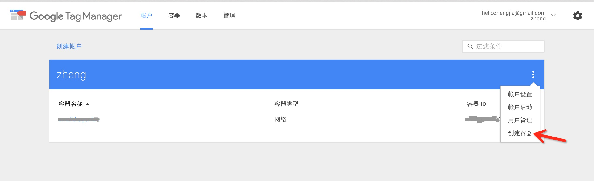
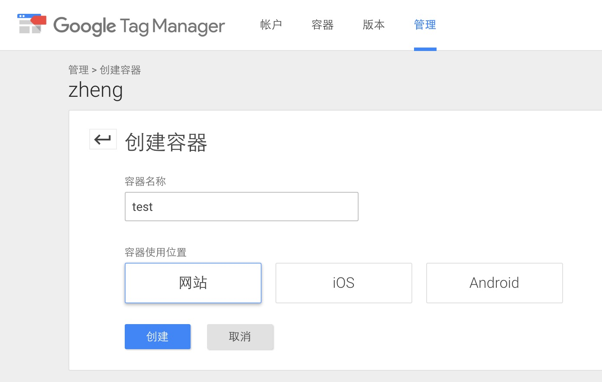
3、最关键的一步，这步完成则成功 99%；将引入 gtm.js 代码加入到我们的网站。
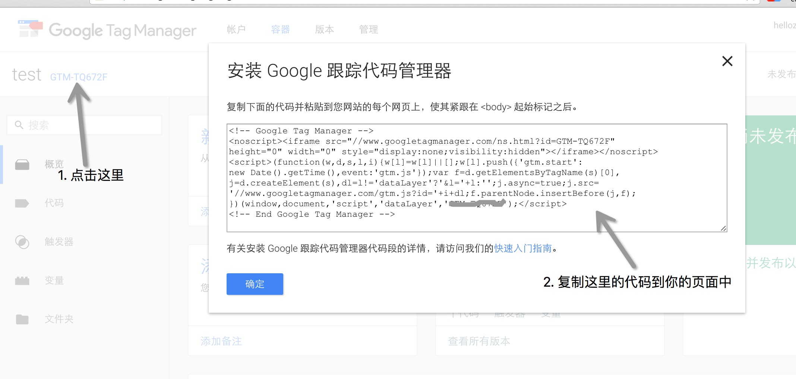
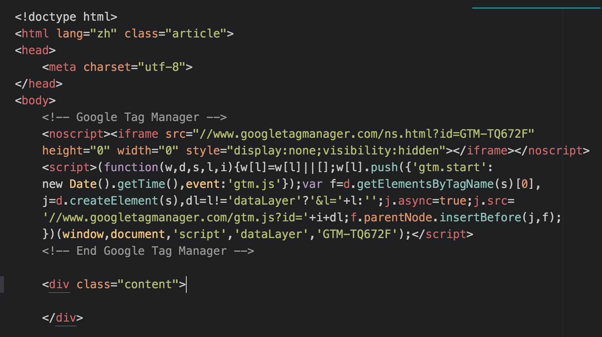
4、发布代码 gtm.js
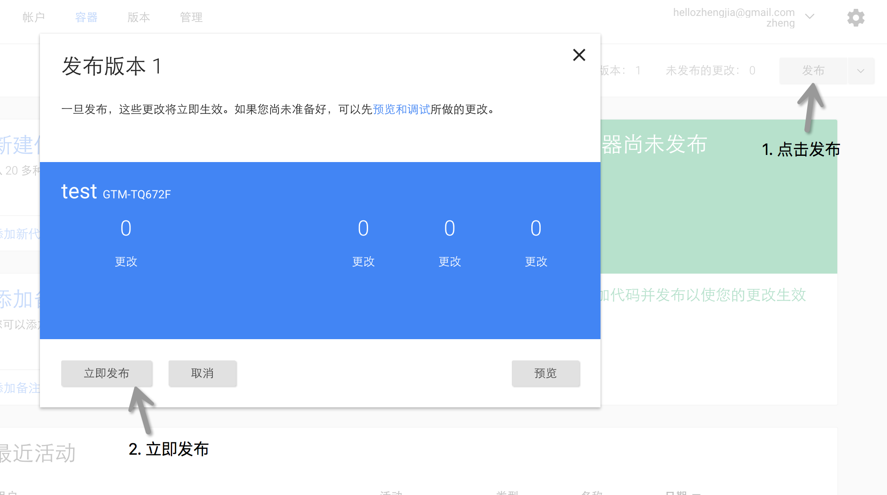
至此，在我们的网站上就可以加载我们可爱的 gtm.js 了
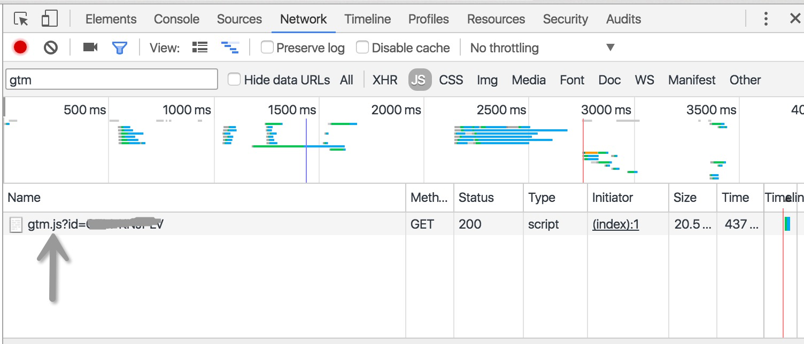
怎么用 2，谈谈怎么配置 Tagmanager
有三个核心词，代码（tags）、触发器（triggers）、变量（variables）
1、代码，即页面需要执行的统计代码
可以是向 GA 发送一次 PV
1 | ga('send', 'pageview', location.pathname); |
也可以是执行一段自定义代码
1 | console.log('Hello Tagmanager.'); |
2、触发器，决定代码什么时候执行
文档加载完成时触发、链接被点击时等等，google 为我们内置很多常用的触发器，我们可以自由组合，甚至我们还可以自定义事件触发。
3、变量，如其名，它就如平常代码里的变量，可以在触发器、代码中引用
可以是一个常量，如下定义，则可以在其他地方双大括号引用 即可
1 | website=harvestmoon.cn |
也可以是一段定义的函数，动态返回，如下
1 | function(){ |
具体使用
明白了概念，使用起来就会得心应手，下面看看具体的用法，现在我们需要在网页里引入 GA 的统计 （analytics.js），并且往 GA 发送 pageView。
1、添加代码（tags），代码需要实现的就是引入 analytics.js、发送 pageView，两个功能。
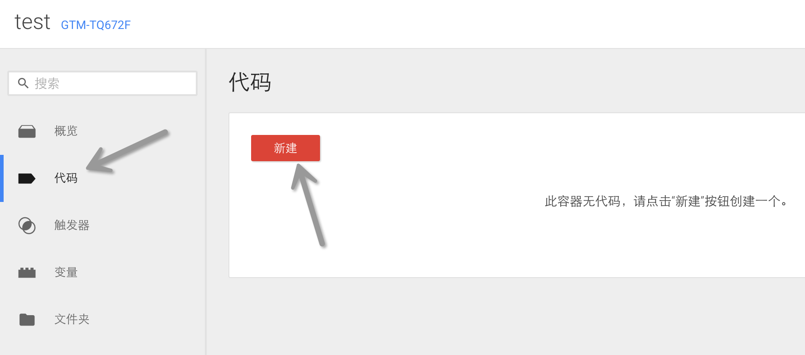
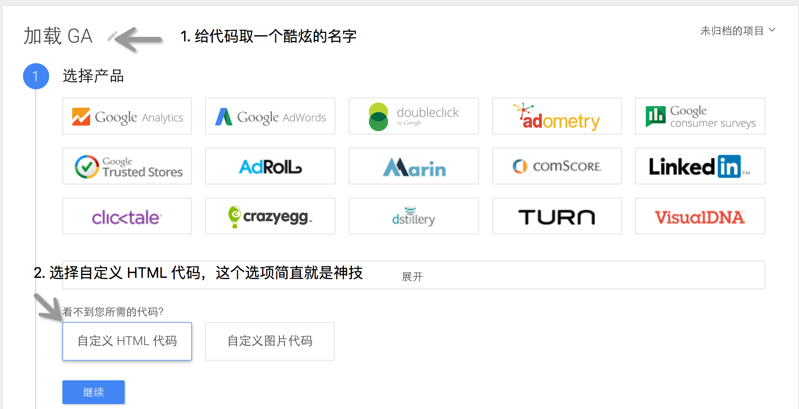
添加完需要执行的代码后，点击继续，就要设定代码什么时候执行了。
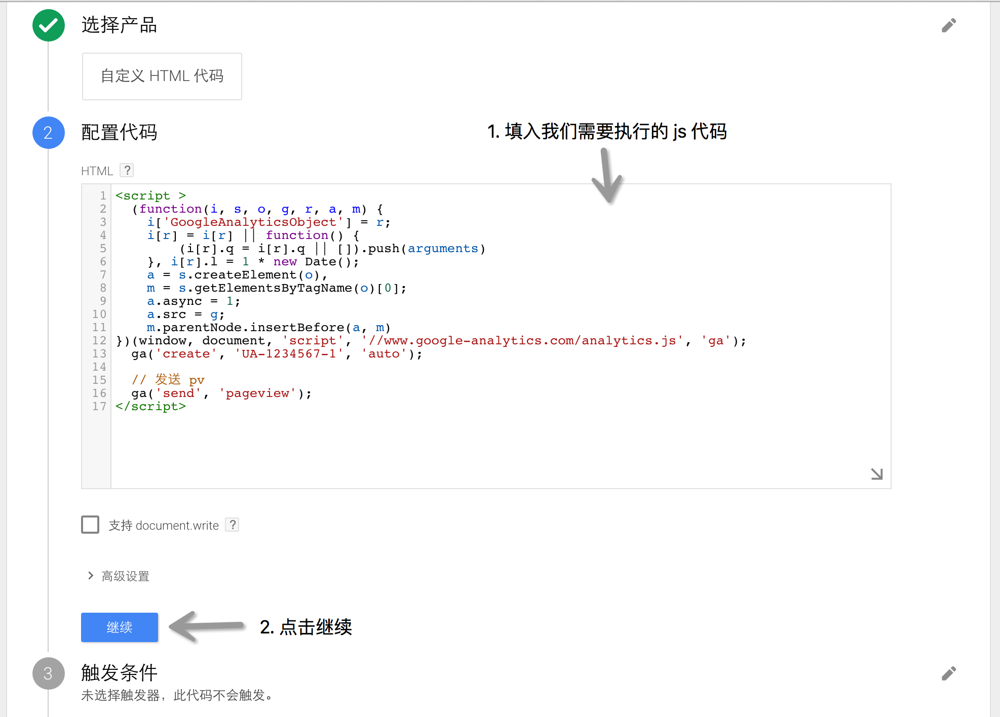
2、新增、设置触发器
这里需要的触发器很简单，当页面加载完成后执行即可
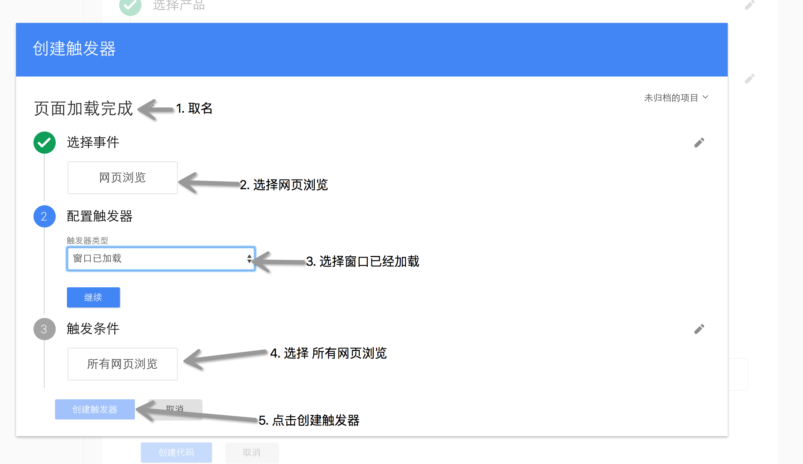
3、最后点击 创建代码，即可
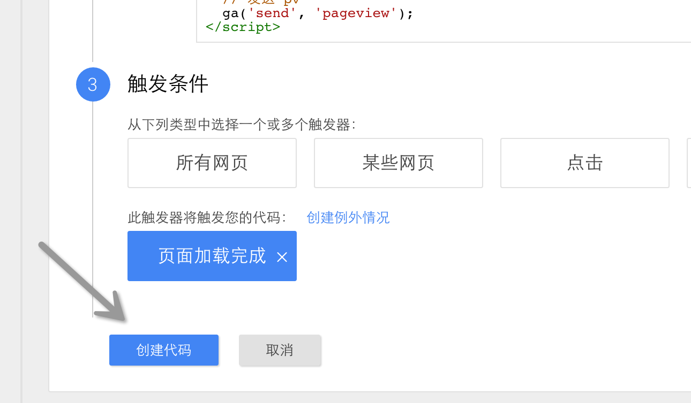
4、完事具备，现在只需要将我们新增好的代码发布出去，我们的网站页面即可收到最新的 gtm.js。
5、预览模式，推荐所有的操作都在 chrome 上进行，因为笔者没有验证其他浏览器
作为程序员，对自己代码都会保持怀疑心，所以，需要验证后才能公布于众，还好 google 给我们提供了一个伟大的功能，预览模式，见下图操作即可
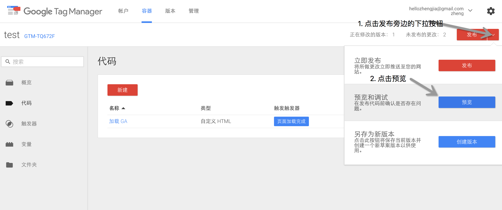
预览开启成功后，是这个样式的
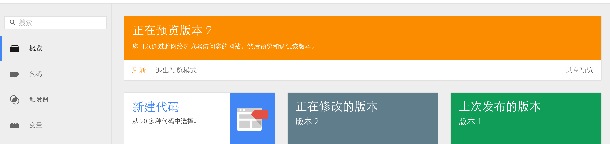
打开我们的页面，是这个损色的，推荐访问 www.smalldragonluo.com，是一个很有趣的网站
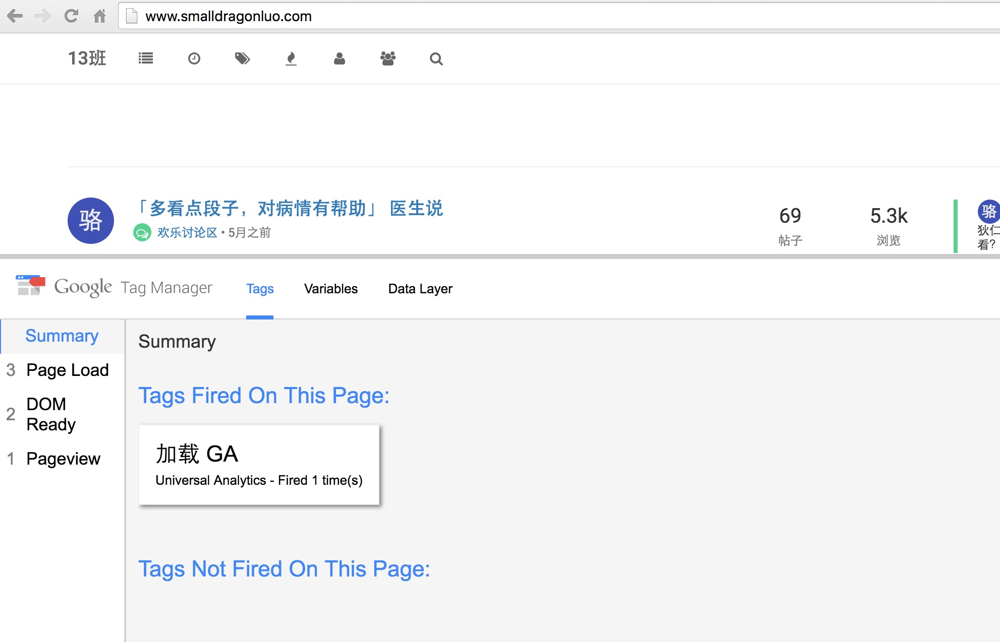
页面会出一个调试的窗口，里面会显示出当前执行了哪些 代码（tags），并且是在什么时候触发的，当我们写了一个比较复杂的逻辑并且出问题时，这些信息就能很快的帮我们定位到出问题的位置。图上显示，触发了“加载 GA”这个代码。
让我们看看网络请求数据，用事实和疗效说话，如下图
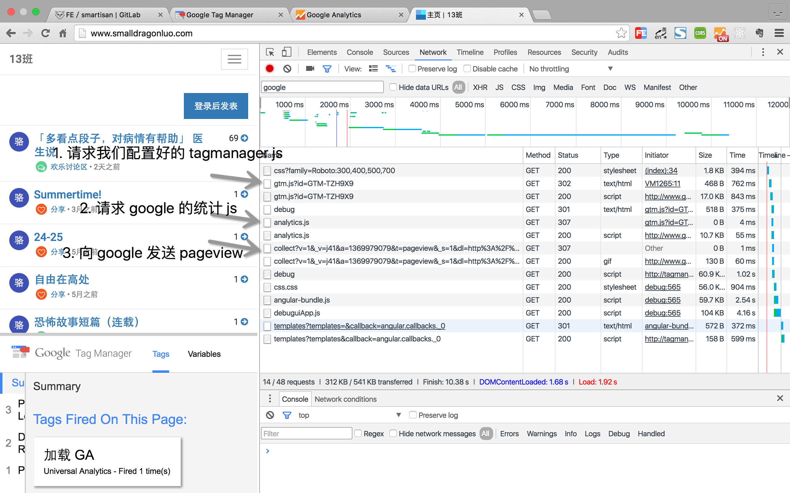